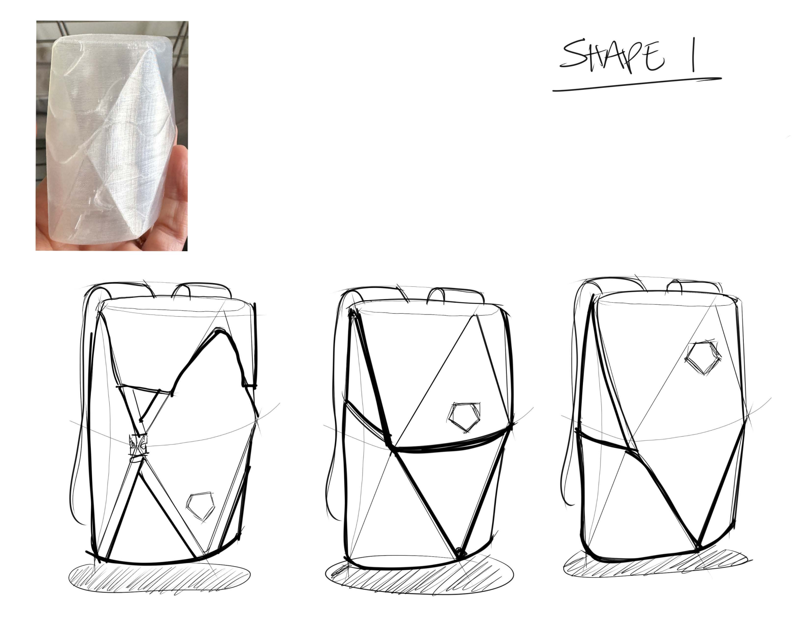
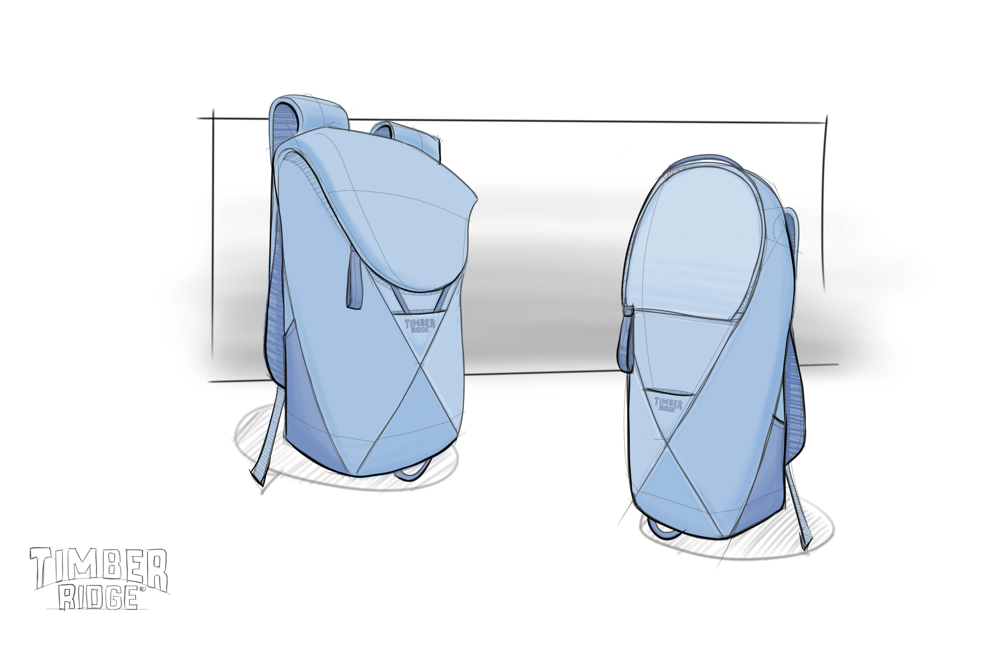

Mid funnel
Physical filtering reduces the field to the forms worth translating.
The decision here is not about detail. It is about which forms carry enough identity, consensus, and structural viability to survive into true bag development.
Yes · shape 1
Faceted Pillow

Strongest graphic read and the clearest opportunity for a signature front architecture.
No · shape 2
Central Teardrop

Cleaner and softer, but less ownable and less structurally charged than the winning directions.
Yes · shape 3
Ordered Chaos

Unconventional but controlled, with a panel logic that can mature into a distinct system.
Slide 03 · Shape selection after physical and visual filtering